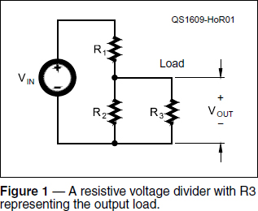
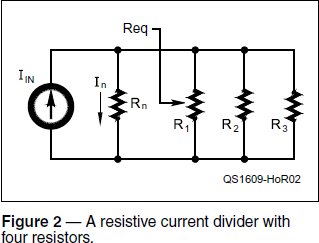
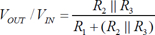
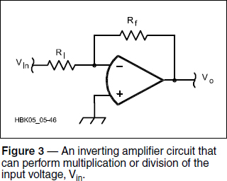
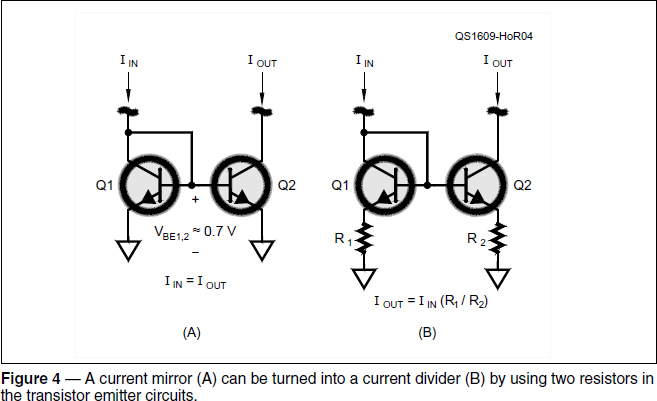
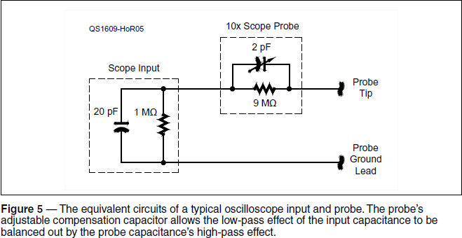

Experiment #164 — Dividers
Dividers — they seem like such trivial things. That is, until you need one and then the mad scramble through the reference books begins. There are electronic dividers for every aspect of a signal; voltage, current, power, phase, frequency. We’ll take a look at voltage and current dividers this month. You should have these circuits tucked away in your radio toolbox, ready for use wherever the need arises.
Passive Voltage and Current Dividers
The passive version of voltage and current dividers in Figures 1 and 2 are about the simplest resistive circuits around. The equation for output voltage across R3 (the load resistor) as a fraction of the input voltage, VIN is:



where the symbol || represents “in parallel with.” Note that you have to take into account the loading effect of R3 in parallel with R2 to calculate the exact division ratio.
How much does the loading effect matter? Well, that also depends on the ratio of R1 and R2, but let’s take a typical situation with R1 (the divider input resistor) being 10 × R2. Varying the ratio of R3 to R2 from 0.1 (R3 = 10% of R2) to infinite (R3 = an open circuit), the voltage divide ratio varies from 0.009 to 0.09, which is a 10:1 range! So yes, it matters. (An Excel spreadsheet showing how the ratios R1:R2 and R3:R2 affect VOUT/VIN is available on the “Hands-On Radio” web page for this experiment.1) With this ratio of R1:R2, R3 must be 10×R2 or more to cause a voltage division error of less than 10%.
Where the voltage divider is essentially a series circuit, the current divider in Figure 2 is a parallel circuit. The figure shows a four-resistor divider, but any number of resistors, n, can be used. The current through resistor Rn, is:
In / IIN = Req / (Rn + Req )
where Req is the parallel value of all resistors other than Rn. In Figure 2, Req = R1 || R2 || R3.
Active Voltage Dividers
Op-amps are great for building circuits that perform analog math operations. In fact, that’s what the “op” in “op-amp” actually means — “operational.” The inexpensive IC amplifiers you buy for pennies today are the descendants of the original amplifiers used in analog computers to solve all sorts of hard problems.
The circuit in Figure 3 performs the operation of multiplication or division with the ratio determined by the ratio of the two resistors, Ri and Rf. (See Experiment #3 for an explanation of how the circuit works.)

add an inverting buffer circuit to get rid of the minus sign and you have a multiplier or divider, depending on whether the value of Rf is larger or smaller than that of Ri.
Active Current Dividers
You may have seen the circuit in Figure 4A before — the current mirror. When the transistors Q1 and Q2 are closely matched, the collector current through Q2 will equal or “mirror” the current in Q1. Current mirrors work because matched bipolar junction transistors with the same base-to-emitter voltage will have the same collector currents. Because the bases and emitters are connected together, VBE must be the same for both transistors and so are the collector currents.

The two transistors are matched if they are made out of the same material (Si, Ge, GaAs, etc), have the same current gains (β), and are at the same temperature. Without careful measurements, it’s hard to find two individual transistors that are precisely matched. If the transistors are part of the same IC, however, they will be very closely matched. For example, the MPQ2222 contains four 2N2222 transistors in either DIP or SMT packages.
The current mirror can be turned into a current divider by adding resistance in the emitter circuit of each transistor. With the bases connected together, the voltage from the bases to common is equal for both transistors:
In / IIN = Req / (Rn + Req)
If VBE1=VBE2, then the transistor currents are controlled by the ratio of the two resistors: IIN/IOUT = R2/R1 and IOUT = IIN(R1/R2). In the truest sense, this circuit doesn’t divide a single current into two individual currents, but it does create an output current that is a known and controllable fraction of the first.
Probing the Effect of Reactance
There is no requirement that the voltage divider in Figure 1 be constructed only from resistors. Reactances will do nicely, and the Colpitts oscillator relies on a capacitive voltage divider in its feedback circuit. (See Experiment #34, “RF Oscillators, Part 1,” for a description of the Colpitts circuit.) If reactances and resistances are mixed, there will be a phase shift between the input and output voltage that depends on frequency. If inductive and capacitive reactances are used, the result is a series tuned circuit and a resonance is created at the frequency where the reactances are equal, creating equal and opposite phase shifts that cancel, as well.
In keeping with our recent theme of oscilloscope-related ideas, a voltage divider with reactance describes the combination of a scope input connected to a 10× probe. Figure 5 shows the scope’s input has approximately 20 pF of parallel capacitance and the probe has a 10× smaller adjustable capacitance of 2 pF in parallel with its series resistance.

While it is expected that the scope’s high-impedance input might include some capacitance, what is the function of the small adjustable capacitance in the probe? At dc, both capacitors have infinite reactance and can be ignored, leaving a 10:1 voltage divider circuit. As the signal frequency increases however, the reactance of the scope’s input capacitance goes down. This would act as a low-pass filter and higher frequency signals and signal components would be attenuated, distorting the input signal.
The scope probe capacitance acts as a compensating high-pass filter. As frequency increases, its reactance goes down, creating a larger signal at the scope input. The effect — when the probe capacitor is properly adjusted — exactly balances the low-pass effect of the scope’s input capacitance.
In your scope’s manual, you will find instructions for adjusting a probe’s compensating capacitor. The probe is connected to a square wave, usually provided at a test point right on the scope’s front panel. This square wave is rich in harmonics that give it the sharp corners. If the probe’s capacitance is too high, the high-pass effect allows too much harmonic energy into the scope and the square wave overshoots on each transition. If the probe’s capacitance is too low, the low-pass effect dominates and the square wave’s corners are rounded. By adjusting the probe compensating capacitor until the square wave’s corners are as sharp and close to right angles as possible, the low- and high-pass effects balance and the frequency response of the combined probe and scope input is flat across the bandwidth of the scope.
Don’t take my word for it — fire up your scope and give it a try! If you don’t have a manual for your scope, the online probe compensation tutorial from Pico Technology will fill in the blanks for you.2 Carefully adjust the compensating capacitor while watching the effect on the test square wave’s corners. You will clearly see the high- and low-pass effects.
Notes
1All previous “Hands-On Radio” experiments are available to ARRL members at www.arrl.org/hands-on-radio.
2www.picotech.com/library/application-note/how-to-tune-x10-oscilloscope-probes